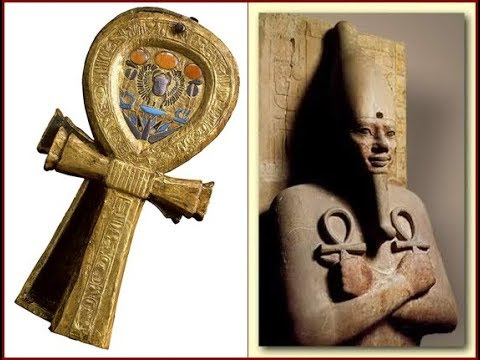
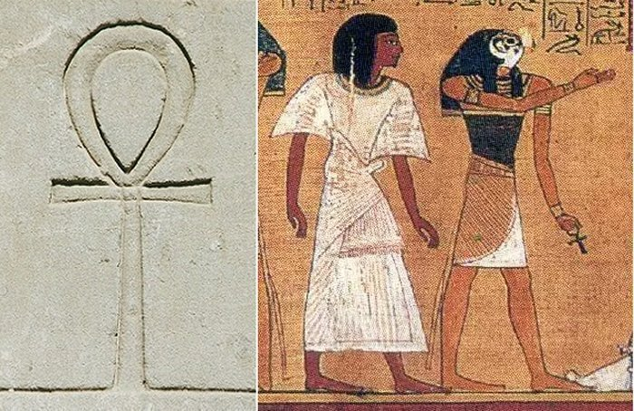

Q1. From the podcast, how has our understanding of what dinosaurs really look like evolved? Describe the progression of how we portrayed them and how might this effect our understanding of what Archeology is saying about them.
In middle of 20th century, we portrayed dinosaurs to be big, dumb and cold blooded reptiles. They were thought to be evolutionary failures and many visuals did not have dinosaurs interacting whatsoever. Jon Ostrum, a professor at Yale dug up a species of raptor called Deinonychus. From that discovery, he argued that dinosaurs looked like athletic birds instead of looking like lizards. There was also portrayal of dinosaurs also being athletic and smart and so Bob bakker and Jon Ostum teamed up to create visuals and depiction of dinosaurs being intelligent, active, and bird like. Throughout the 1970’s paleontologists were influenced by Ostom and Bakker’s theories to be warm blooded, intelligent, and bird like. After Jurassic Park, John Conaway's depictions of dinosaurs were similar to Bakker's to be lean and muscular. Soon later, Paleontologists tried to make accurate depictions of dinosaurs based on skeleton and trying to draw layers of muscles/fat because it was difficult to see how much fat was on dinosaurs. It was difficult to visualize to know how dinosaurs looked like because all the fat and muscles disappeared and we are only left with bones for us to kind of figure out how dinosaurs looked like.
Q2. The artist/archaeologist John Conway who is doing interpretations of dinosaurs is obviously taking liberty with what could be the actual truth of how these creatures existed. What other disciplines and forms of studies use similar techniques that remind you of this method or process. Please elaborate with your examples both written as well as images and links.
For example, in ancient Egypt, the hieroglyphic symbol for Ankh is “Key of Life”. It’s symbol has been used many times within ancient Egypt, especially within the dead to ensure life after death. The ankh is also shown with familiar pharaohs and kings.
 Q3. First, summarize in your own words the characteristics of 'Material Speculation' as described in the second article. So given this article's examples for possible future products, how can this same technique also be used to create objects that refer to the past?
Material speculation is being able to speculate an object based on what it looks like in terms of its characteristics and the way it is designed. We can speculate what the item can be, giving it the possibility of how it would exist in that world. Another same technique is 3D printing and being able to restore artifacts and culture that has been destroyed in the past. Another is finding old vintage items and refurbishing them to its glory.